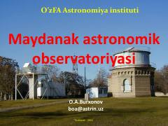

MAMaydanak astronomik observatoriyasining tarixi va texnik imkoniyatlari haqida ilmiy ma'lumotnoma.
Ushbu kitob O'zbekiston Fanlar Akademiyasi Astronomiya institutiga qarashli Maydanak astronomik observatoriyasining tarixi, geografik joylashuvi va texnik imkoniyatlari haqida ma'lumot beradi. Unda observatoriyadagi asosiy teleskoplar, ularning texnik xususiyatlari va ilmiy ahamiyati yoritilgan.